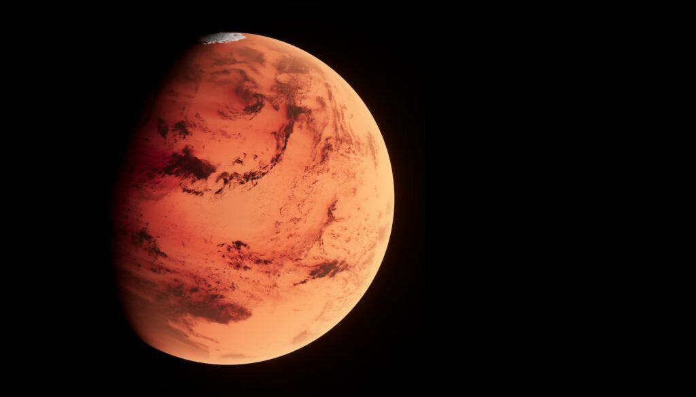
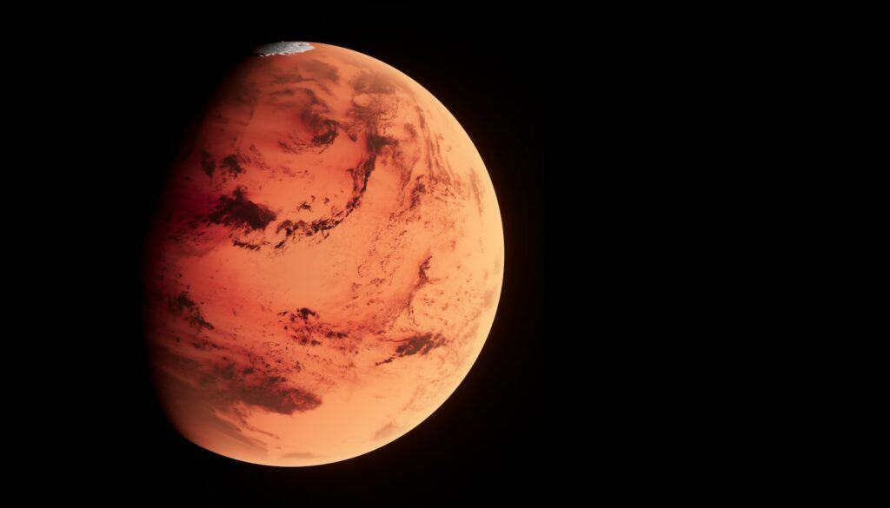

The Mars
Mars is the fourth planet from the Sun and the second-smallest planet in the Solar System, larger only than Mercury. In the English language, Mars is named for the Roman god of war. Mars is a terrestrial planet with a thin atmosphere and has a crust primarily composed of elements similar to Earth's crust, as well as a core made of iron and nickel. Mars has surface features such as impact craters, valleys, dunes, and polar ice caps. Mars has two small, irregularly shaped moons, Phobos and Deimos.
Some of the most notable surface features on Mars include Olympus Mons, the largest volcano and highest-known mountain in the Solar System, and Valles Marineris, one of the largest canyons in the Solar System. The Borealis basin in the Northern Hemisphere covers approximately 40% of the planet and may be a large impact feature. Days and seasons on Mars are comparable to those of Earth, as the planets have a similar rotation period and tilt of the rotational axis relative to the ecliptic plane. Liquid water on the surface of Mars cannot exist due to low atmospheric pressure, which is less than 1% of the atmospheric pressure on Earth. Both of Mars's polar ice caps appear to be made largely of water. In the distant past, Mars was likely wetter, and thus possibly more suited for life. It is not known whether life has ever existed on Mars.
Mars has been explored by several uncrewed spacecraft, beginning with Mariner 4 in 1965. NASA's Viking 1 lander transmitted the first images from the Martian surface in 1976. Two countries have successfully deployed rovers on Mars, the United States first doing so with Sojourner in 1997 and China with Zhurong in 2021. There are also planned future missions to Mars, such as a NASA-ESA Mars Sample Return set to happen in 2026, and the Rosalind Franklin rover mission, which was intended to launch in 2018 but was delayed to 2024 at the earliest, with a more likely launch date at 2028.
Mars can be viewed from Earth with the naked eye, as can its reddish coloring. This appearance, due to the iron oxide prevalent on its surface, has led to Mars often being called the Red Planet. It is among the brightest objects in Earth's sky, with an apparent magnitude that reaches −2.94, comparable to that of Jupiter and surpassed only by Venus, the Moon and the Sun. Mars has been observed since ancient times. Over the millennia has been featured in culture and the arts in ways that have reflected humanity's growing knowledge of it.
Internal structure
Like Earth, Mars has differentiated into a dense metallic core overlaid by less dense materials. Current models of its interior imply a core consisting primarily of iron and nickel with about 16–17% sulfur. This iron(II) sulfide core is thought to be twice as rich in lighter elements as Earth's. The core is surrounded by a silicate mantle that formed many of the tectonic and volcanic features on the planet, but it appears to be dormant. Besides silicon and oxygen, the most abundant elements in the Martian crust are iron, magnesium, aluminium, calcium, and potassium. The average thickness of the planet's crust is about 50 kilometres (31 mi), with a maximum thickness of 125 kilometres (78 mi). By comparison, Earth's crust averages 40 kilometres (25 mi) in thickness.
Mars is seismically active. In 2019, it was reported that InSight (now offline) had detected and recorded over 450 marsquakes and related events. In 2021 it was reported that based on eleven low-frequency marsquakes detected by the InSight lander the core of Mars was indeed liquid and had a radius of about 1830±40 km and a temperature around 1900–2000 K. The Martian core radius is abnormally large, accounting for more than half the radius of Mars and about half the size of the Earth's core. To this, it has been suggested that the core contains some amount of lighter elements like oxygen and hydrogen in addition to the iron–nickel alloy and about 15% of sulfur.
The core of Mars is overlaid by the rocky mantle, which does not seem to have a thermally insulating layer analogous to the Earth's lower mantle. The Martian mantle appears to be solid down to the depth of about 500 km, where the low-velocity zone (partially melted asthenosphere) begins. Below the asthenosphere the velocity of seismic waves starts to grow again; and at the depth of about 1050 km lies the boundary of the transition zone extending down to the core.
Surface geology
Mars is a terrestrial planet with a surface that consists of minerals containing silicon and oxygen, metals, and other elements that typically make up rock. The Martian surface is primarily composed of tholeiitic basalt, although parts are more silica-rich than typical basalt and may be similar to andesitic rocks on Earth, or silica glass. Regions of low albedo suggest concentrations of plagioclase feldspar, with northern low albedo regions displaying higher than normal concentrations of sheet silicates and high-silicon glass. Parts of the southern highlands include detectable amounts of high-calcium pyroxenes. Localized concentrations of hematite and olivine have been found. Much of the surface is deeply covered by finely grained iron(III) oxide dust.
Although Mars has no evidence of a structured global magnetic field, observations show that parts of the planet's crust have been magnetized, suggesting that alternating polarity reversals of its dipole field have occurred in the past. This paleomagnetism of magnetically susceptible minerals is similar to the alternating bands found on Earth's ocean floors. One theory, published in 1999 and re-examined in October 2005 (with the help of the Mars Global Surveyor), is that these bands suggest plate tectonic activity on Mars four billion years ago, before the planetary dynamo ceased to function and the planet's magnetic field faded.
Scientists have theorized that during the Solar System's formation Mars was created as the result of a random process of run-away accretion of material from the protoplanetary disk that orbited the Sun. Mars has many distinctive chemical features caused by its position in the Solar System. Elements with comparatively low boiling points, such as chlorine, phosphorus, and sulfur, are much more common on Mars than Earth; these elements were probably pushed outward by the young Sun's energetic solar wind.
After the formation of the planets, all were subjected to the so-called "Late Heavy Bombardment". About 60% of the surface of Mars shows a record of impacts from that era, whereas much of the remaining surface is probably underlain by immense impact basins caused by those events. There is evidence of an enormous impact basin in the Northern Hemisphere of Mars, spanning 10,600 by 8,500 kilometres (6,600 by 5,300 mi), or roughly four times the size of the Moon's South Pole – Aitken basin, the largest impact basin yet discovered. This theory suggests that Mars was struck by a Pluto-sized body about four billion years ago. The event, thought to be the cause of the Martian hemispheric dichotomy, created the smooth Borealis basin that covers 40% of the planet.
 


Characteristics
Mean radius: 3389.5 ± 0.2 km (2106.1 ± 0.1 mi)
Flattening:0.00589±0.00015
Surface area: 144.37×106 km2
(5.574×10 7 sq mi; 0.284 Earths)
Volume:1.63118×1011 km3 (0.151 Earths)
Mass: 6.4171×1023 kg (0.107 Earths)
Mean density:3.9335 g/cm3 (0.1421 lb/cu in)
Moment of inertia factor:0.3644±0.0005
Escape velocity:5.027 km/s (18100 km/h; 11250 mph)